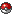

The game
PokeWorld is a multiplayer online game.
The game has 7 worlds and 808 pokemon!
Anyone can join for free, You can also pay for additional features.
Rules
The rules are on PokeWorld are pretty simple:
- Not advertise other websites.
-
No spamming. (Spamming is a number of times in succession say something
unnecessary).
-
Ignoring warnings of a Crewmember may lead to a temporary Mute/Ban. If
you keep doing this, is a possible permanent Mute/Ban in place.
-
The Crew has the right to see and do everything, they can never be held
responsible for.
-
Cheating is strictly prohibited. If you make a mistake in the game and
have discovered these benefits is not allowed. You will be heavily
punished. Tell us so.
- No scolding, swearing and/or write vulgar language.
- Racist, offensive and/or accusatory expressions is not allowed
- No arguing.
- Place no links on the chat.
-
No private matters discuss through chat, forum and/or on your profile.
Do this through Personal Message.
-
No flooding (Flooding is the excessive repetition of the same text,
word, letters, too many images and/or emoticons).
-
Do not prompt for passwords. Never give your password
away.
- No double account, only with permission of the owner.
If you do one of these things we will mercilessly mute or ban you from the
site.
How long the Mute or Ban will be depends on what you did wrong.
The beginning
In the beginning, Professor Oak will come to you.
He will be with you the rules once through and then he gives you a pokemon
egg.
You have the choice between a number of pokemon depends on the world where
you are at that moment.
After you get the pokemon you can immediately start the game.
Tips for the game
- Play PokeWorld in a Mozilla Firefox browser.
-
If you\'re on a public computer (At school or something), remember your
password, then not .
-
Also if you\'re on a public computer plays: Aways log out when you just
walk away.
-
If you go on vacation, put all your money in the bank and do your
pokemon at the daycare.
-
Buy Always balls before you start fighting. Who knows what you suddenly
encounter.
-
If you are looking for a pokemon, look at pokemon information where to
find it.
- Become a premium, the additional features are very good.
Silver and gold
You can pay in '.$game['titel'].' with silver and gold, here you can see
where silver and gold for is:
-
 = Silver.
= Silver.
-
 =
Gold.
=
Gold.
Silver can you get in the game by means work, defeat trainers, etc.
Gold you can buy in the premium market, this allows you to buy some things
you can not with silver, like:
- Buy master balls
- Buy rare candy\'s
- Change username
- Donate gold to other members
- Make from a pokemon, a shiny pokemon
Pokemon
PokeWorld has 808 different pokemon and all those pokemon are also in a
shiny shape.
A shiny pokemon is the same okemon as a normal but rarer and another
color.
You can recognize a shiny pokemon the

the name and
color of the pokemon.
Ranks
There are 20 ranks on PokeWorld:
- Newbie
- Junior
- Senior
- Casual
- Trainer
- Great Trainer
- Traveller
- Macho
- Gym Leader
- Shiny Trainer
- Elite Trainer
- Commander
- Professional
- Hero
- King
- Champion
- Legendary
- Untouchable
- God
- Pokemon Master
TM\'s and HM\'s
There are on PokeWorld 92 TM\'s and 8 HM\'s.
TM
A TM can be bought at the market. You can give a TM only to a pokemon with
the same type, so if it is an fire attack only a fire pokemon can learn.
Some attacks have 2 types.
A TM can be used only 1 time.
HM
A HM can be earned by defeating a gymleader.
The HM can be used as often as you like.
Administrators
There are always one or more administrators in a game.
The name of an administrator is red.
These are the functions of a administrator:
- Help people by answering their questions.
An administrator can read all messages everyone sends. This is sure to
protect members.
If you see an error in the game we would like to hear.
If someone insults you out if you are in any degree offended let us know, We
do our best to have something to do.
Do not ask if you can be an administrator. If we need a new, then we choose
them.
Moderators
There are always one or more moderators in a game.
The name of a moderator is blue.
These are the functions of a moderator:
- Help people by answering their questions.
A moderator is to ensure that the forum and/or chat is running flexible. For
instance, if there\'s a fight he/she can intervene.
Register
Fill in all fields when registering as well as possible.
Your email address must be valid because that makes your activation email
sent there.
You check the bottom of the page that the only thing your account. Try not
to lie about it.
Look after you have created your account as to which email address the email
is sent. You can always make a typing mistake.
Activate account
Before you can play you must first activate your account.
The activation code is sent to your email address you specified when
logging.
If you are unable to activate the account please let us know by contact.
Forgot username
Enter your email and your username will be sent to your email address.
If you do not receive email please let us know by contact.
Forgot password
Enter your username and email and get a new password sent to your e-mail
address.
Login with the new password and you can change your password in the game at
Account options - Password.
If you do not receive email please let us know by contact.
Account options
Account options has 5 different page\'s:
 Personal
Personal
Here you can edit your data.
Please update your profile as honestly as possible to fill, so first name,
last name, country, and sex.
You can also check whether your team and badges on your profile come to
be.
Badges on your profile is only available if you have a badge box.
Password
Here you can change your password.
Try this easy to remember.
 Profile
Profile
Everything you enter is below the bottom of your profile to stand.
If you click on
Here there will appear a page where all
codes as responsible:
- Set youtube videos on your profile.
- Set a pokemon on your profile.
- Change text color.
- Etc. etc.
Restart
account
You can restart your account 1 time at a day.
This is to allow members not every 15 minutes restart their account because
they do not like their pokemon.
Suppose you do not like your pokemon you can always trade with someone. If
this really does not work you can always consider about 24 hours to restart
your account.
Profile
Each member has his/her own profile.
Which is also accessible if you are not logged in through rankinglist.
Add to your profile no negative things about other players. Invective are
not allowed.
You can make your profile very nice, see for Account options - Profile
above.
Rankinglist
This is the list of all the members sorted by rank.
If you are not logged in you can also see this page. So know what you\'re
doing!
The top 50 will also be given a medal on their profile.
Pokemon information
Select a pokemon and you find all the information you need.
You can even see where you can that find pokemon (which area + world).
Advertising for gold
You can send your PokeWorld link through Whatsapp, Forums, Facebook,
etc..
For each registered member you get some gold!
Pokemon reorder
With this system you have the pokemon drag up or down.
It will automatically be saved.
Sell a pokemon
You can sell a pokemon.Set him on the transferlist.
Someone can buy the pokemon you have set him on t he transferlist.
A pokemon has a certain value, the asking price may be worth up to 1.5x and
at least half of its value.
You can\'t sell your starter pokemon, who is too much attached to you.
A Premium Member may set 3 pokemon on the transferlist. A normal member
1.
You can sell a pokemon from rank 4 Casual.
Release a pokemon
You can release a pokemon on PokeWorld.
You\'ll get the ball back which caught, at least if your item box is not
full.
You can\'t release your starter pokemon, who is too much attached to you.
Note: this can not be reversed.
You can release a pokemon from rank 5 Trainer.
Items
Here I kept all the items you have.
They can also be used or sell.
You start with a bag, it can contain 20 items. If you want more items you
have to buy in the market a Yellow box, Blue box or Red box.
Badge box
For each world, you have a box for your badges.
The badges come automatically to lie here if you have them.
You get a badge box from the gymleader you as first defeat.
This page is only accessible if you\'ve got the badge box from a
gymleader.
My house
In the normal pokemon games are the pokemon move in the pokemon center with
a computer.
In PokeWorld is different, you have a house!
You start with a box, 2 pokemon here can stay in.
At the house seller you can buy a house which can accommodate more
pokemon.
Pokedex
Pokedex
In your Pokedex is saved what pokemon you\'ve seen and what you have
caught.
You should first buy a Pokedex at the market.
Pokedex chip
You can also buy at the market a Pokedex chip. that\'s a update for your
Pokedex.
With this you can see the level of a wild pokemon.
Buddylist and Blocklist
Buddylist
The buddylist is easy to make someone to give money or send a message. You
no longer need to search for a player.
Send message
You can send a message on PokeWorld to another member.
Think about what you are sending. When rules state what can and can not!
Pokemon messenger
Here you can talk with other members.
Attack
First you choose an area where you want to fight.
Then a pokemon appear who wants to fight you.
Shiny & Legendary pokemon
You can even encounter Shiny pokemon or Legendary. It does not matter what
rank you are, the probability of a Shiny or Legendary is always great.
Happiness mandatory course you off as much as possible to continue
attacks.
Trainer
Sometimes a trainer or Team Rocket suddenly appears to fight you. You have a
chance when the trainer or Team Rocket is defeated you get an item or some
silver.
Run
Before you can run you first need to buy a bike in the market.
A bicycle works only a with wild pokemon, So not at a trainer battle.
Lose
If you lose 25% of your silver off, what cash you have with you.
Go therefore often along the pokemon center! Do not gamble on another
pokemon because there is always a trainer emerge.
Error code
When suddenly an error code pops would be useful to mention them to an
administrator. Tell then also the error code you saw.
Gyms
In each world are 8 gyms. You can only challenge a gym if you rank is high
enough.
-
 = Pokemon is
alive.
-
=
Pokemon is Knock out.
You only win if all the pokemon from gymleader are Knock out.
After the fight, the gymleader gives you what you deserve. This is usually a
badge and some silver.
The gyms are only available from rank 8 Macho.
Duel
You can also in PokeWorld duel against other members.
If you win you get the pickled price.
It will be saved who wins.
Duel is only accessible if you\'re Premium, you can only duel against a
Premium Member.
Duel is only available from rank 5 Trainer.
Tournament
You can also participate in a tournament.
The member who wins goes a round further!
Tournament is only accessible if you\'re Premium and is only available
from rank 5 Trainer.
Work
In PokeWorld you can also work for some silver.
The higher your rank how easy the work is. This also means that when you
start you can not rob casino. The chance that this will happen is very
small.
A Premium Member has additional job opportunities.
Race
You can race against other members.
The system automatically selects your fastest pokemon, race you there.
Against the fastest of your opponent.
The pokemon can running up against a tree, etc.
If a race invitation already 3 days old it will be automatically deleted.
Racing is available from rank 4 Casual.
Traders
There are also trainers who want to trade pokemon.
They tell you what pokemon they want and what they have for you.
Every day at 3:00 be the pokemon renewed.
If you have trade you can not trade for 3 days with the traders.
Tip: exchange as much as possible because this will cause
the pokemon after a battle more EXP points.
Traders are only available from rank 5 Trainer.
Choose a level
Choose a level is a function where you can check what level pokemon you want
to encounter in the wild.
This function is only available from rank 16 Professional.
Premium market
In the Premium market, you can buy Premium days. The benefits of premium are
able to each pack.
We also sell discount packs. If you are underage, make sure that you have
your parents approval
Pokemon center
You can heal your pokemon here again full of life.
It is free, it just takes some time.
A Premium member must wait 10 sec for the healing of the pokemon, and a
normal member 30 seconds.
Market
In the market you can buy all the things you need:
- Balls
- Potions
- Items
- Special items
- Stones
- Pokemon eggs
- TM\'s
The pokemon eggs are each hour renewed.
Pokemon eggs are only available from rank 2 Junior.
TM\'s are only available from rank 5 Trainer.
Transform items are only available from rank 11 Elite Trainer.
Bank
Functions of the Bank:
- Deposit silver to the bank.
- Deposit silver from the bank.
- Transfer money to another member.
Tip: Deposit as much silver you have cash to the bank. Then
no one can steal. Spread it on the day, not that you already out of turns in
the morning.
A Premium Member can deposit money to the bank 10x per day, a normal
member 5x.
Rent a boat
You can rent a boat to sail to another world.
This takes no time, you\'re there in less than 1 second!
You paid tickets for all your pokemon + yourself.
Houses seller
Buy a house on PokeWorld. The bigger the house, the more pokemon in it can
stay.
You can not sell your house and you can only get better buy than you already
have.
If you have a Villa (the biggest house) house seller disappears from the
menu.
Transferlijst
Hier kun je een Pokémon kopen.
Hoe hoger jouw rank is, hoe hoger de level is wat je van de transferlijst
kunt kopen.
Als je een Pokémon hebt gekocht zit die in je huis.
De transferlijst is beschikbaar vanaf rank 4 Casual.
Daycare
Here you can bring pokemon and the daycare is trying to train them.
Sometimes a pokemon even grows 2 levels per day!
Egg:
Sometimes you get a baby pokemon (an egg). You can pick it up at the daycare
if there is 1.
There can only be an egg if the 2 pokemon are the same. For instance:
If you have a 2 Pikachu\'s and brings to the daycare, you get an egg with
Pichu.
A Pikachu and Raichu will not work.
If both are shiny pokemon, the pokemon from the egg will also be shiny.
It works only with pokemon that are not rare.
Tip: a Ditto can come in handy.
A Premium Member can bring 2 Pokemon at the daycare and a normal member 1
pokemon.
The daycare is available from rank 4 Casual.
Name specialist
The name specialist can change the name of a pokemon.
It costs
40 silver. And your name is changed to the name that you want
Note: the name may not be a scold name
The name specialist is available from rank 9 Gym Leader.
Shiny specialist
The shiny specialist can make a pokemon shiny with gold. Each pokemon has a
certain amount of gold needed to be shiny.
Due to the impact of the shiny gold \'evolving \' the pokemon into a shiny
pokemon.
The shiny specialist is available from rank 10 Shiny Trainer.
Jail
In jail
Sometimes you gets in jail because you\'re trying to steal something at
work, or do anything else wrong.
You can buyout yourself whether you should hope that someone else breaks you
out (released).
Visiting
You can also go to visit someone in jail and buy him/her out, or break
free.
Gamble
Toss a coin
A simple game where you have to guess whether the coin is heads or tails.
If you do it right you win the stake back twice, in error, you lose the
silver.
Who is the quiz
In the \'Who is the quiz\' you have to guess what the name is from the
pokemon.
Each member can do this 1 time per hour.
Cracking the safe
At \'Cracking the safe\' you have to guess the code. If you are wrong 200
Silver is going in the pot. If you got it right, you win the pot and then it
get reset and put the pot back on 1000 Silver..
Wheel of Fortune
Wheel of Fortune is an additional function to free what to get. Spin the
wheel and see what your price is.
A Premium Member can spin the wheel 3x per day, a normal member 1x.
Lottery
Lottery is a very nice variation to gamble.
Members can buy tickets up to 10 per lottery.
The lottery will be raffled at the time what it says. The winner gets all
the inlaid money.
The Premium lottery is only available to Premium members. Here you win
the inlaid money + a Rare Candy.
Pokemonrace
The pokemonrace is a very nice variation to gamble.
Members can fill in 5 gold per race.
The pokemonrace get paid at 22:00 hours. The winner gets his inlaid gold
time 2,3,4 or 5 back.
The pokemonrace is only available to Premium members.